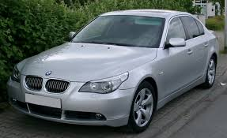
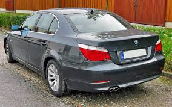
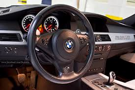

BMW E60
The fifth-generation 5 Series (2003 - 2010)



Car Specifications
- Engine Options: Inline-4, Inline-6, V8, V10 (M5)
- Power: 170 - 507 hp
- Torque: 220 - 520 Nm
- Transmission: 6-speed manual, 6-speed automatic, 7-speed SMG
- Top Speed: 250 km/h (155 mph) for the M5
- 0-100 km/h: 4.7 seconds (M5)
- Fuel Economy: 7.0 - 14.5 L/100 km (33 - 16 mpg)
- Production Years: 2003 - 2010
- Body Style: Sedan, Touring (Wagon)
- Drive Type: Rear-Wheel Drive, All-Wheel Drive (xDrive models)
- Weight: 1,500 - 1,900 kg
About the BMW E60
The BMW E60 introduced a bold and modern design under Chris Bangle’s direction, departing from the conservative styling of its predecessor. The E60 featured a mix of luxury, innovation, and performance, appealing to a new generation of enthusiasts.
Notable for its advanced iDrive system and adaptive suspension, the E60 also brought cutting-edge safety features like night vision and active steering.
Image Gallery


Key Features
- Performance: M5 model powered by a 5.0L V10 delivering 507 hp.
- Design: A bold and innovative design by Chris Bangle.
- Technology: Advanced iDrive system, active steering, and night vision.
Technical Information
The BMW E60 features a variety of advanced engines and configurations:
Engine Codes and Iterations
- N52: Inline-6, used in 525i, 530i.
- N62: V8, used in 545i, 550i.
- M57: Diesel inline-6, used in 530d.
- S85: 5.0L V10, used in the M5, producing 507 hp.
Conclusion
The BMW E60 remains a polarizing yet groundbreaking model in BMW’s history. Its bold design, advanced technology, and thrilling M5 variant ensure its place as a modern classic among enthusiasts.